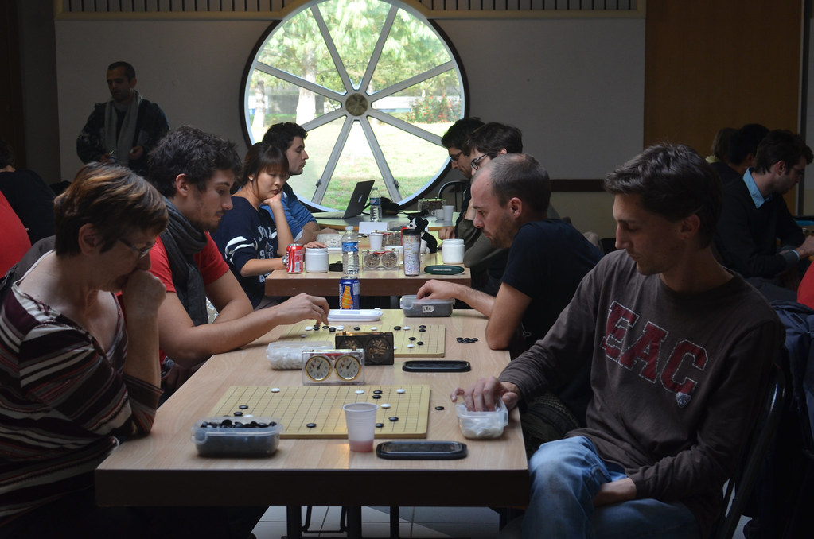

Baduk/Go Glossary
By: Aaliyah
Baduk/Go
Exploring The Unique Terminology and Strategy of the Game
As a beginner in the world of Baduk/Go, it's easy to feel overwhelmed by the sheer amount of terminology and strategy involved in this ancient game. But fear not, our Baduk/Go Glossary is here to guide you through it all!
Whether you're looking to better understand the meaning behind familiar terms like "ko" and "tesuji," or are curious about more advanced concepts like "yose" and "aji," our comprehensive guide has got you covered. Each term is explained in detail, with clear examples and diagrams to help you visualize and better understand the game.
But our glossary isn't just for beginners - even seasoned players can benefit from a quick refresher on some of the more complex concepts in the game. Plus, with regular updates and additions, there's always something new to learn.
So what are you waiting for? Dive into the world of Baduk/Go and take your gameplay to the next level with our Baduk/Go Glossary.
ad space
Glossary
Unlock the Secrets of Baduk/Go with Our Comprehensive Glossary
Baduk, also known as Go, is a captivating and often complex game that has captured the hearts of players for centuries. If you're new to the game, learning the terminology and jargon can be a daunting task. That's where our Glossary comes in - your one-stop-shop for all the terms and phrases you need to know to master the game.
With our comprehensive and easy-to-use glossary, you'll be able to navigate the intricacies of Baduk like a pro. From basic terms like "atari" and "komi" to more advanced concepts like "tesuji" and "joseki", our glossary covers it all. With clear definitions and examples, you can be confident in your understanding of the game.
But our glossary isn't just for beginners - even experienced players can benefit from refreshing their knowledge or learning new phrases. Plus, with Baduk's influence spreading around the world, our glossary is the perfect tool for bridging language barriers and connecting players from different cultures.
So what are you waiting for? Explore our glossary today and unlock the secrets of Baduk/Go!
ad space
Territory
Master the Game: Understanding the Territory in Baduk/Go
As a player of Baduk/Go, it is critical to understand the concept of Territory. Territoriality is a key element in this strategic and calm game. It is essential to have a thorough understanding of the principles behind Territory to become a professional player. Knowing the area you control and your opponent's influence is what gives you an edge over them.
In Baduk/Go, Territory means the number of points that a player occupies on the board. The player with a larger amount of Territory at the end of the game will most likely be the winner. It is not just about occupying more spaces on the board; it is about having a meaningful Territory with potential for scoring points.
Having said that, it is essential to have an understanding of various types of Territory. Such as:
1. Framework Territory: It is a Territory that results when a player creates a large amount of space in the center of the board. It often includes surrounding opponent groups into one broad shape that is difficult to invade.
2. Potential Territory: It is a Territory that has yet to be claimed but has the potential to be built. Influence plays an important role in deciding the Potential Territory.
3. Eye Territory: The eye is a vital component in Baduk/Go. The eye allows a group to gain safety by creating a space that cannot be invaded. Eye Territory is territory in which an eye exists, and the opponent cannot reduce it.
Knowing these types of Territory can be of great help in improving your gameplay. Understanding Territory helps you to defend your area while trying to occupy your opponent's space. It is a subtle balance between making space for yourself while limiting your opponent's opportunities.
A word of advice for beginners is to focus on securing a positive Territory rather than trying to capture all of your opponent's stones. Creating and maintaining your own Territory will always be more beneficial in the long run.
To conclude, understanding Territory in Baduk/Go is fundamental to advancing as a player. Territory plays a significant role in gameplay and strategy. With correct implementation of the principles behind Territory, one can assert their dominance on the board and dominate their opponent.
ad space
Sente
Mastering the Tactics of Sente in the Game of Baduk/Go
In the strategic world of Baduk/Go, the term Sente is a crucial concept used by players to obtain the upper hand in gameplay. This Glossary sheds light on the meaning of Sente- a Japanese term for initiative- and its application in the Baduk/Go game. From defining the term to providing examples of Sente moves, our comprehensive guide will help you master the tactics of Sente in your gameplay.
Sente refers to the player's control over the initiative, requiring their opponent to respond to their next move. Achieving Sente allows for the opportunity to seize control of the game, maintain momentum, and increase the likelihood of winning. Our guide breaks down how to recognize and create Sente moves to increase your odds of success.
Furthermore, we examine the role of Sente in capturing groups, creating territory, and gaining influence on the board. Providing examples of famous games from professional players, we demonstrate how top-tier players use Sente to their advantage. With our Baduk/Go Glossary, you'll be equipped to master the art of Sente and dominate to win.
ad space
Tesuji
Discover Critical Game-Changing Moves with Our Comprehensive Go Glossary: Tesuji
If you're serious about mastering the ancient game of Baduk, it's time to dive deeper and learn about tesuji. This term is used to describe a critical game-changing move that occurs within the game of Go. Tesuji moves occur in countless variations, making them both challenging and exciting for players.
At our Baduk/Go Glossary, we've compiled a comprehensive guide to the most important tesuji moves. We've researched countless games to find the most critical tesuji moves, using data to help you learn from the greatest masters of the game.
Our guide is written in clear, concise language that's easy to understand, even if you're new to Go. Whether you're a beginner or an experienced player looking to hone your skills, our glossary is the ultimate resource for mastering tesuji moves.
From the snap-back to the ladder escape, each move is accompanied by a detailed explanation, so you can fully understand its impact on the game. We also include fun anecdotes and real-world examples to help bring each tesuji move to life.
At our Baduk/Go Glossary, we're dedicated to helping you excel at this fascinating game. So why not take a closer look at the game-changing tesuji moves today? With our guide, you'll be sure to take your Go game to the next level!
ad space
Joseki
Mastering the Art of Joseki: A Comprehensive Guide to Enhancing Your Baduk/Go Knowledge
If you're serious about improving your Baduk/Go game, understanding the intricate details of Joseki is essential. Every seasoned player knows that Joseki is the cornerstone of advanced strategy. It allows for smooth transitions between opening moves and provides a foundation for mid-game success.
Our Joseki guide offers a comprehensive look at this dynamic feature of Baduk/Go. You will learn about the different types of Joseki, how to identify them, and how to use them to your advantage. We have also included helpful diagrams and examples to help you visualize each Joseki scenario.
Whether you're a beginner or an advanced player, our Joseki guide will elevate your Baduk/Go strategy to the next level. With these new skills in your arsenal, you'll be ready to compete at any level with confidence. Explore our guide today and reap the benefits of mastering the art of Joseki.
ad space
Conclusion
Discover Your Inner Go Master: Understanding the Game's Lingo with Our Glossary
Our comprehensive Baduk/Go Glossary has provided you with the essential terminology and definition to help understand the ancient and fascinating game of Go. With a thorough knowledge of the game's lingo, you are now ready to take your skills to the next level and emerge as a Go master.
It's been a pleasure to introduce you to the world of Go and we hope that our Glossary has broadened your understanding and appreciation of this timeless game. As you delve deeper into the depths of Go, remember to always stay curious, study the greats, and never stop learning.
Thank you for choosing our Baduk/Go Glossary as your primary resource for understanding all there is to know about Go. Keep exploring, keep playing and have fun!
ad space